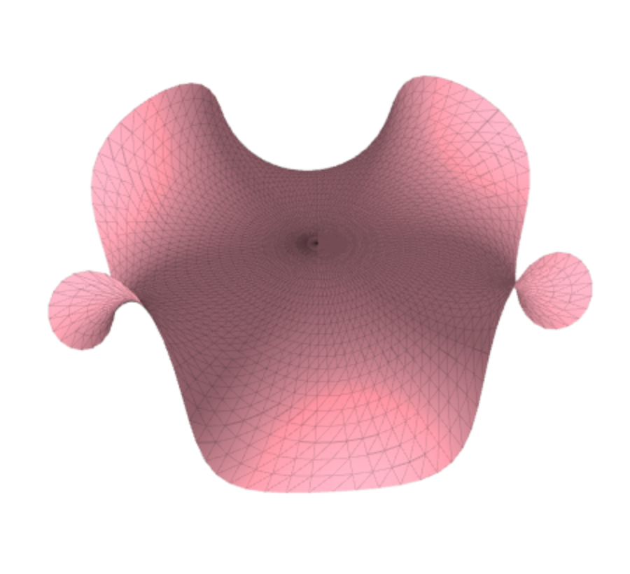
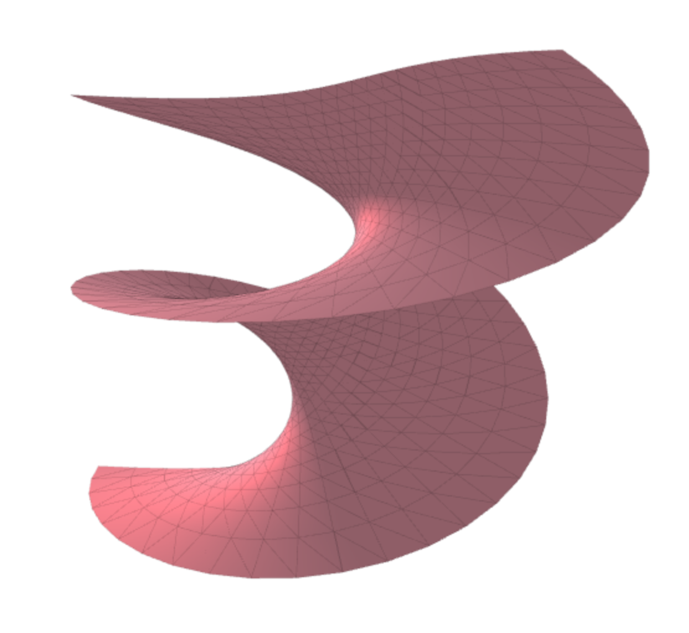

UBC PHYS 350: The Wilson Loop
Soap Films: An Interactive Investigation of Classical Phenomena

Enneper Minimal Surface
Soap Film Simulation

Catenoid to Helicoid Transformation
Soap Film Simulation
Fully responsive but requires Javascript.
Please
enable javascript
to use this site without issue.